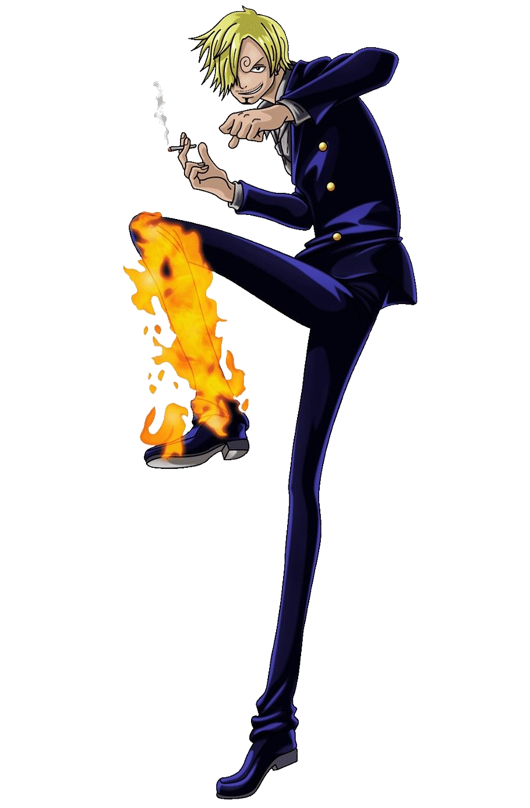

Vinsmoke Sanji
Características Principais:
Nome original: サンジ
Nome traduzido: Vinsmoke Sanji
Nacionalidade: Francês
Terra-natal: Reino Germa - North Blue
Idade: 21
Altura: 1,80
Peso: Desconhecido
Habilidade: Cozinheiro
Armas usadas: Espadas (raramente)
Tripulação: Piratas do chapéu de palha
Biografia
Sanji nasceu no North Blue na Família Vinsmoke, a família real do Reino Germa. Enquanto ele e seus três irmãos nasceram
no mesmo dia, Sanji nasceu em terceiro lugar, tornando-o terceiro príncipe do reino.
Eventualmente, com oito anos, Sanji cortou todos os laços com sua família e cruzou a Red Line em direção ao East Blue.
Sanji foi aprendiz do sous-chef Zeff, e os dois tiveram uma longa história juntos.